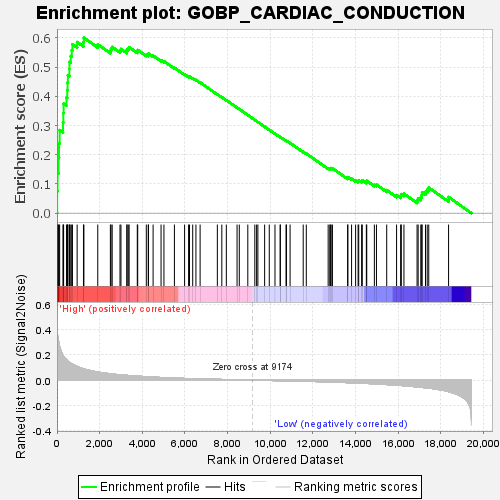
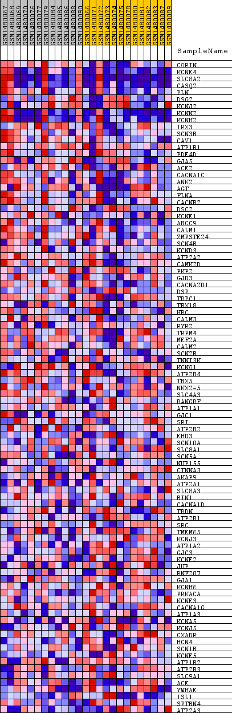
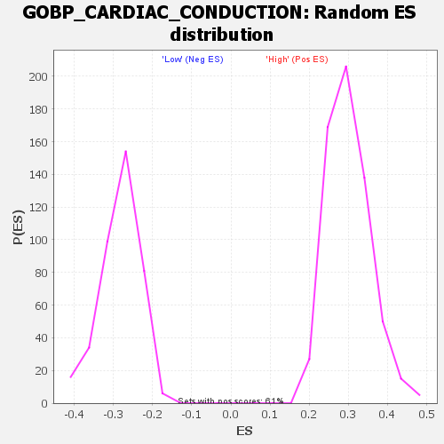

| Dataset | WG6v3.MRPL3.cls#High_versus_Low.MRPL3.cls#High_versus_Low_repos |
| Phenotype | MRPL3.cls#High_versus_Low_repos |
| Upregulated in class | High |
| GeneSet | GOBP_CARDIAC_CONDUCTION |
| Enrichment Score (ES) | 0.6003965 |
| Normalized Enrichment Score (NES) | 1.9991387 |
| Nominal p-value | 0.0 |
| FDR q-value | 0.0050248425 |
| FWER p-Value | 0.062 |

| SYMBOL | TITLE | RANK IN GENE LIST | RANK METRIC SCORE | RUNNING ES | CORE ENRICHMENT | |
|---|---|---|---|---|---|---|
| 1 | CORIN | CORIN | 7 | 0.435 | 0.0751 | Yes |
| 2 | KCNE4 | KCNE4 | 26 | 0.365 | 0.1376 | Yes |
| 3 | SLC8A2 | SLC8A2 | 73 | 0.312 | 0.1894 | Yes |
| 4 | CASQ2 | CASQ2 | 93 | 0.293 | 0.2393 | Yes |
| 5 | PLN | PLN | 124 | 0.267 | 0.2842 | Yes |
| 6 | DSG2 | DSG2 | 283 | 0.196 | 0.3102 | Yes |
| 7 | KCNJ2 | KCNJ2 | 297 | 0.191 | 0.3427 | Yes |
| 8 | KCNN2 | KCNN2 | 310 | 0.188 | 0.3748 | Yes |
| 9 | KCNH2 | KCNH2 | 444 | 0.162 | 0.3961 | Yes |
| 10 | IRX3 | IRX3 | 481 | 0.156 | 0.4212 | Yes |
| 11 | SCN3B | SCN3B | 495 | 0.152 | 0.4470 | Yes |
| 12 | CAV1 | CAV1 | 510 | 0.150 | 0.4724 | Yes |
| 13 | ATP1B1 | ATP1B1 | 580 | 0.141 | 0.4933 | Yes |
| 14 | PDE4D | PDE4D | 583 | 0.141 | 0.5176 | Yes |
| 15 | GJA5 | GJA5 | 645 | 0.134 | 0.5376 | Yes |
| 16 | ACE2 | ACE2 | 691 | 0.130 | 0.5578 | Yes |
| 17 | CACNA1C | CACNA1C | 724 | 0.127 | 0.5782 | Yes |
| 18 | ANK2 | ANK2 | 944 | 0.108 | 0.5857 | Yes |
| 19 | AGT | AGT | 1241 | 0.090 | 0.5859 | Yes |
| 20 | FLNA | FLNA | 1261 | 0.089 | 0.6004 | Yes |
| 21 | CACNB2 | CACNB2 | 1911 | 0.064 | 0.5780 | No |
| 22 | DSC2 | DSC2 | 2502 | 0.050 | 0.5561 | No |
| 23 | KCNE1 | KCNE1 | 2533 | 0.049 | 0.5631 | No |
| 24 | ABCC9 | ABCC9 | 2587 | 0.048 | 0.5688 | No |
| 25 | CALM1 | CALM1 | 2953 | 0.042 | 0.5572 | No |
| 26 | ZMPSTE24 | ZMPSTE24 | 2998 | 0.041 | 0.5620 | No |
| 27 | SCN4B | SCN4B | 3277 | 0.038 | 0.5542 | No |
| 28 | KCND3 | KCND3 | 3280 | 0.038 | 0.5606 | No |
| 29 | ATP2A2 | ATP2A2 | 3339 | 0.037 | 0.5640 | No |
| 30 | CAMK2D | CAMK2D | 3381 | 0.036 | 0.5682 | No |
| 31 | PKP2 | PKP2 | 3764 | 0.032 | 0.5539 | No |
| 32 | GJD3 | GJD3 | 3784 | 0.031 | 0.5584 | No |
| 33 | CACNA2D1 | CACNA2D1 | 4187 | 0.027 | 0.5423 | No |
| 34 | DSP | DSP | 4278 | 0.026 | 0.5422 | No |
| 35 | TRPC1 | TRPC1 | 4288 | 0.026 | 0.5463 | No |
| 36 | TBX18 | TBX18 | 4505 | 0.024 | 0.5393 | No |
| 37 | HRC | HRC | 4878 | 0.021 | 0.5237 | No |
| 38 | CALM3 | CALM3 | 5013 | 0.020 | 0.5202 | No |
| 39 | RYR2 | RYR2 | 5504 | 0.016 | 0.4976 | No |
| 40 | TRPM4 | TRPM4 | 5982 | 0.013 | 0.4753 | No |
| 41 | MEF2A | MEF2A | 6169 | 0.012 | 0.4678 | No |
| 42 | CALM2 | CALM2 | 6212 | 0.012 | 0.4677 | No |
| 43 | SCN2B | SCN2B | 6362 | 0.011 | 0.4619 | No |
| 44 | TNNI3K | TNNI3K | 6513 | 0.010 | 0.4560 | No |
| 45 | KCNQ1 | KCNQ1 | 6709 | 0.010 | 0.4475 | No |
| 46 | ATP2B4 | ATP2B4 | 7517 | 0.006 | 0.4068 | No |
| 47 | TBX5 | TBX5 | 7727 | 0.005 | 0.3969 | No |
| 48 | NKX2-5 | NKX2-5 | 7938 | 0.004 | 0.3868 | No |
| 49 | SLC4A3 | SLC4A3 | 8441 | 0.003 | 0.3613 | No |
| 50 | RANGRF | RANGRF | 8546 | 0.002 | 0.3563 | No |
| 51 | ATP1A1 | ATP1A1 | 8945 | 0.001 | 0.3359 | No |
| 52 | GJC1 | GJC1 | 9274 | -0.000 | 0.3189 | No |
| 53 | SRI | SRI | 9358 | -0.001 | 0.3147 | No |
| 54 | ATP2B2 | ATP2B2 | 9417 | -0.001 | 0.3119 | No |
| 55 | EHD3 | EHD3 | 9734 | -0.002 | 0.2959 | No |
| 56 | SCN10A | SCN10A | 9951 | -0.003 | 0.2851 | No |
| 57 | SLC8A1 | SLC8A1 | 10219 | -0.004 | 0.2720 | No |
| 58 | SCN5A | SCN5A | 10464 | -0.005 | 0.2601 | No |
| 59 | NUP155 | NUP155 | 10468 | -0.005 | 0.2607 | No |
| 60 | CTNNA3 | CTNNA3 | 10737 | -0.006 | 0.2478 | No |
| 61 | AKAP9 | AKAP9 | 10760 | -0.006 | 0.2477 | No |
| 62 | ATP2A1 | ATP2A1 | 10927 | -0.006 | 0.2402 | No |
| 63 | SLC8A3 | SLC8A3 | 11542 | -0.009 | 0.2099 | No |
| 64 | BIN1 | BIN1 | 11687 | -0.009 | 0.2040 | No |
| 65 | CACNA1D | CACNA1D | 12712 | -0.014 | 0.1535 | No |
| 66 | TRDN | TRDN | 12787 | -0.015 | 0.1522 | No |
| 67 | ATP2B1 | ATP2B1 | 12827 | -0.015 | 0.1527 | No |
| 68 | SRC | SRC | 12851 | -0.015 | 0.1541 | No |
| 69 | TMEM65 | TMEM65 | 12913 | -0.015 | 0.1536 | No |
| 70 | KCNJ3 | KCNJ3 | 13625 | -0.020 | 0.1202 | No |
| 71 | ATP1A2 | ATP1A2 | 13636 | -0.020 | 0.1231 | No |
| 72 | GJC3 | GJC3 | 13810 | -0.021 | 0.1178 | No |
| 73 | KCNE2 | KCNE2 | 13999 | -0.022 | 0.1119 | No |
| 74 | JUP | JUP | 14116 | -0.023 | 0.1099 | No |
| 75 | RNF207 | RNF207 | 14145 | -0.023 | 0.1124 | No |
| 76 | GJA1 | GJA1 | 14281 | -0.024 | 0.1096 | No |
| 77 | KCNH6 | KCNH6 | 14311 | -0.024 | 0.1124 | No |
| 78 | PRKACA | PRKACA | 14502 | -0.026 | 0.1070 | No |
| 79 | KCNE3 | KCNE3 | 14521 | -0.026 | 0.1106 | No |
| 80 | CACNA1G | CACNA1G | 14878 | -0.029 | 0.0973 | No |
| 81 | ATP1A3 | ATP1A3 | 14976 | -0.030 | 0.0974 | No |
| 82 | KCNA5 | KCNA5 | 15457 | -0.035 | 0.0787 | No |
| 83 | KCNJ5 | KCNJ5 | 15920 | -0.040 | 0.0616 | No |
| 84 | CXADR | CXADR | 16110 | -0.042 | 0.0592 | No |
| 85 | HCN4 | HCN4 | 16141 | -0.042 | 0.0650 | No |
| 86 | SCN1B | SCN1B | 16265 | -0.044 | 0.0664 | No |
| 87 | KCNE5 | KCNE5 | 16880 | -0.053 | 0.0439 | No |
| 88 | ATP1B2 | ATP1B2 | 16931 | -0.054 | 0.0508 | No |
| 89 | ATP2B3 | ATP2B3 | 17055 | -0.056 | 0.0542 | No |
| 90 | SLC9A1 | SLC9A1 | 17097 | -0.057 | 0.0620 | No |
| 91 | ACE | ACE | 17116 | -0.058 | 0.0711 | No |
| 92 | YWHAE | YWHAE | 17275 | -0.061 | 0.0734 | No |
| 93 | ISL1 | ISL1 | 17356 | -0.062 | 0.0801 | No |
| 94 | SPTBN4 | SPTBN4 | 17428 | -0.063 | 0.0873 | No |
| 95 | ATP2A3 | ATP2A3 | 18357 | -0.091 | 0.0551 | No |

